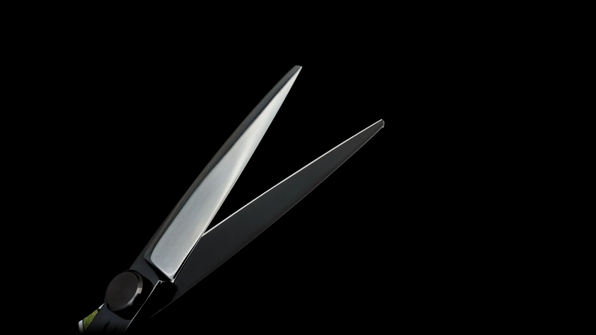
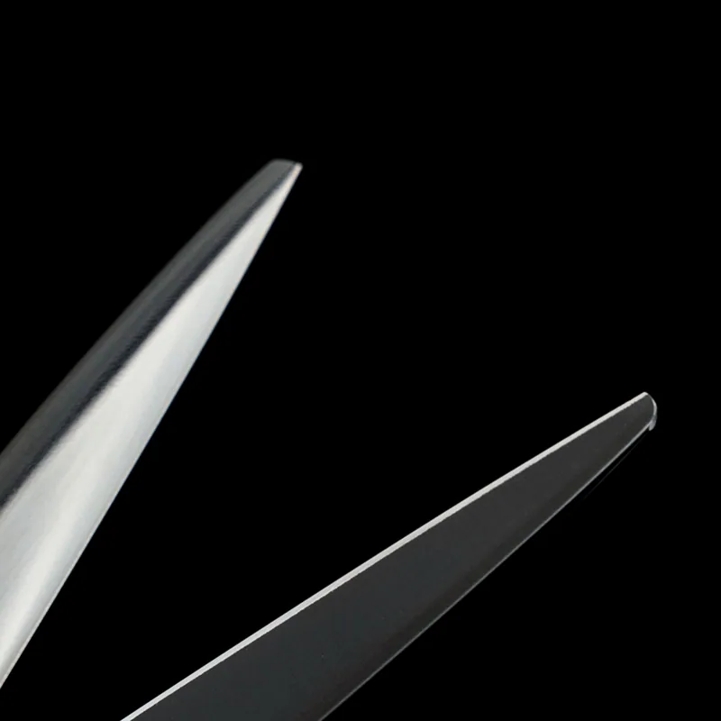
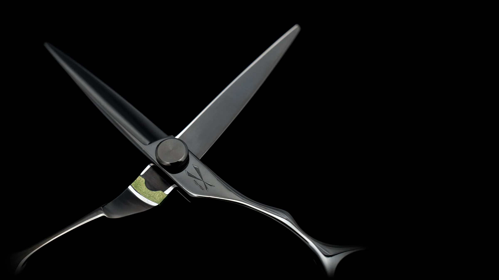
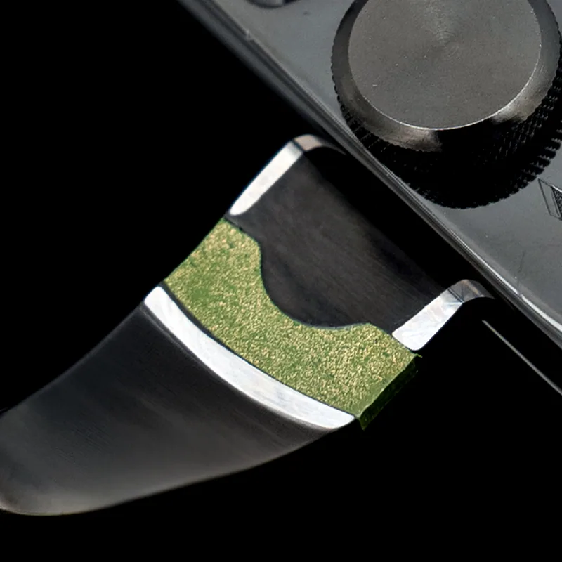
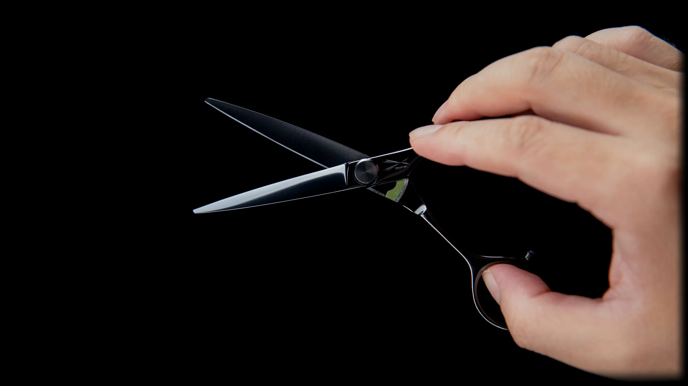
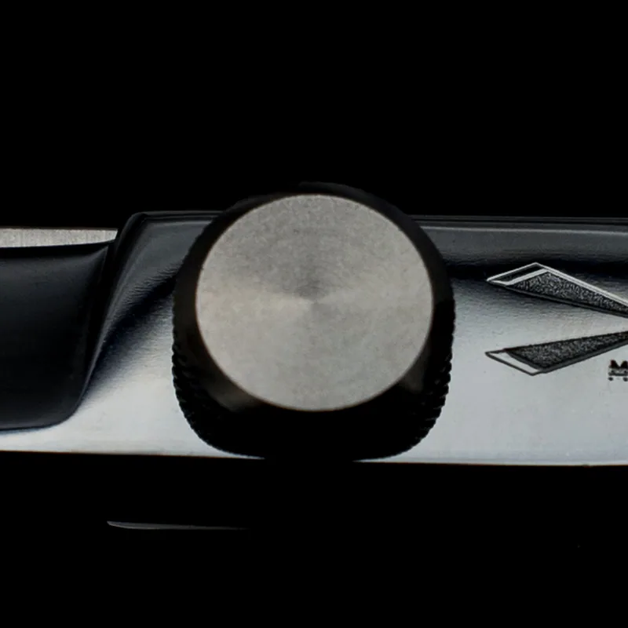
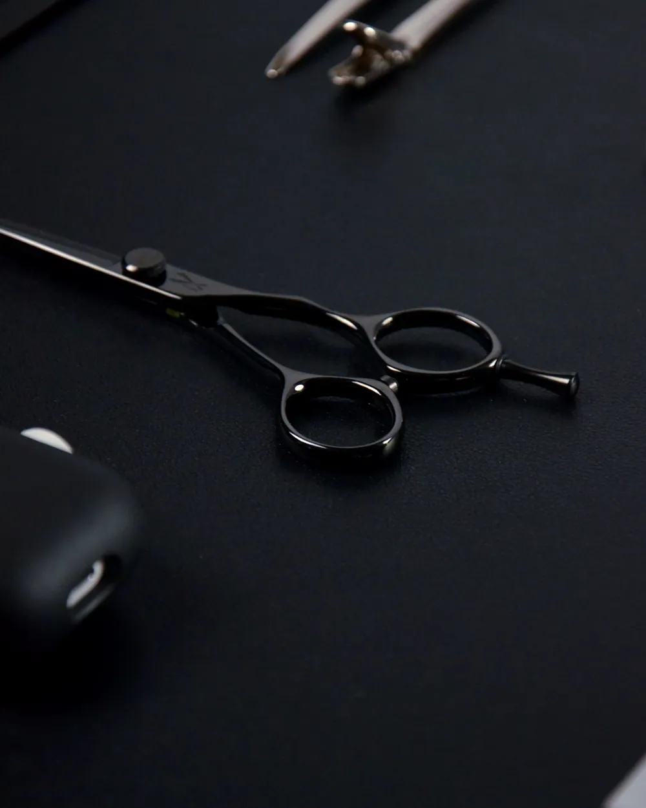
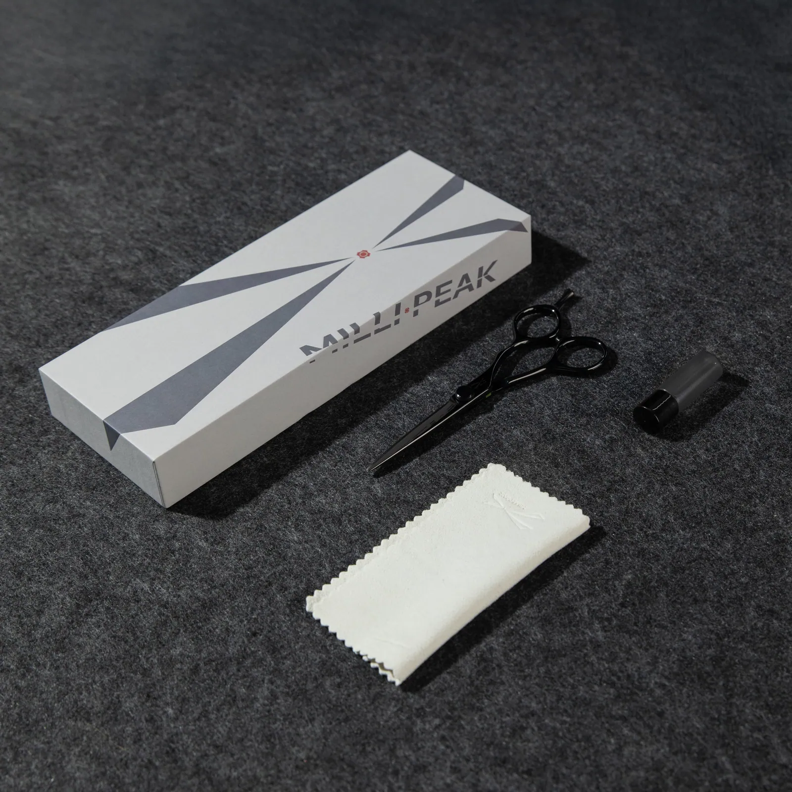

MP-100S 毫剪 精準結構刀
定位 positioning｜精準剪裁
離手最近，所以精準度最高。
Closest to the hand, so the most precise.
不浮誇，卻能掌控每一個細節，尤其修短髮外線時，更能感受工具和手之間的連動。5.25 吋短刀身，給熱愛剪髮、喜歡剪短髮的髮型師。
Never showy, yet in control of every detail; refining short-hair outlines, you feel tool and hand move together. A short 5.25" blade, for stylists who love cutting and love short hair.


01
頭段半圓弧 rounded tip
頭段半圓弧設計，貼著皮膚剪也安心。
A rounded tip, safe even close to the skin.


02
耐磨片 wear plate
內附耐磨片，張力穩定、越用越順。
A built-in wear plate keeps tension steady and smoother with use.


03
平口螺絲 flat screw
平口螺絲，低調。
A flat screw, understated.

MP–100S specifications
- 型號 model
- MP–100S
- 用途 use
- 精準結構刀precision structure shear
- 尺寸 size
- 5.25 吋
- 重量 weight
- 47g
- 整體長度（含尾柄） overall length, with finger rest
- 19cm
- 整體長度（不含尾柄） overall length, without finger rest
- 17.4cm
- 尾柄長度 finger rest
- 1.6cm
- 刀身長度 blade length
- 5.9cm
- 顏色 colour
- 黑色black
- 刃型 blade type
- 頭段半圓弧rounded tip
- 配件 parts
- 耐磨片＋平口螺絲wear plate + flat screw
- 售價 price
- NT$5,000（單支）per pair
＊鋼材：日本 440C Steel: Japanese 440C.
緻 fine.
MP–100S
精準剪裁
- 單支 singleNT$5,000
- 任選 3 把 四款任選三把 any threeNT$13,500
- 4 把組 緻・通・透・順 set of fourNT$17,500
價格為新台幣，含稅。
課程 course：《科學剪髮・基礎剪髮教學》 NT$6,000

配件 accessories
盒裝內容：剪刀、包裝盒與隨附配件。
In the box: the shears, the case and included accessories.